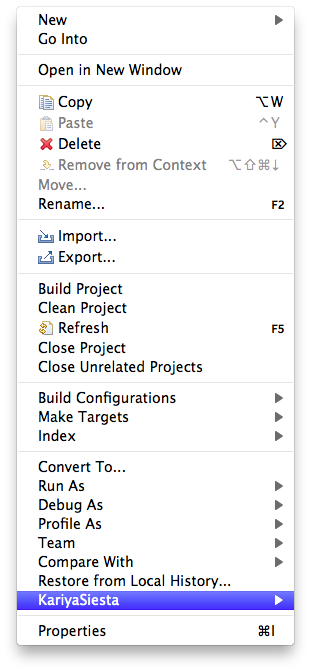
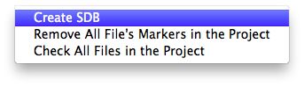
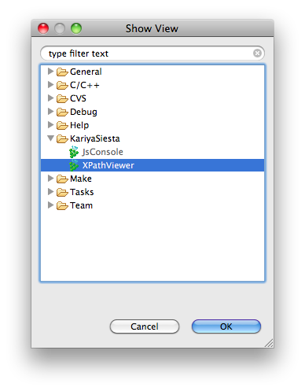
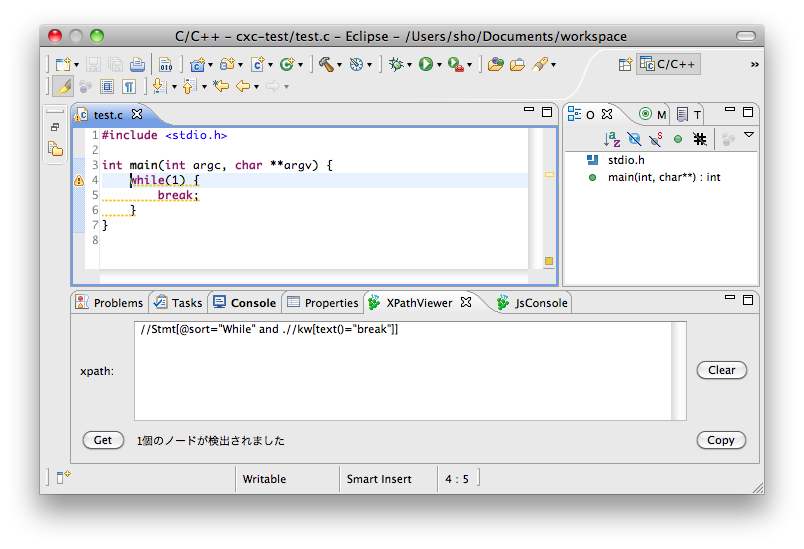

SDB はソフトウェアデータベースの略で、C言語ソースコードの解析結果を保存しています。 KariyaSiesta はソースコードのチェックに SDB を利用しているため、 チェックの前に SDB を構築する必要があります。
Project Explorer からチェックしたいプロジェクトを右クリックし、 KariyaSiesta -> Create SDB をクリックします。
 これで SDB の構築は終了です。
Window -> Show View -> Other... をクリックし、 KariyaSiesta 内の XPath Viewer をクリックします。 OK をクリッ クします。
表示された XPathViwer 内のテキストエリアに XPath 式を入力して TAB キーを押すと、 XPath 式で指定された部分にマーカが表示されます。
XPathViwer 内のボタンの機能は以下の通りです。
CX-Model については ドキュメント を参照してください。
while ブロック内部で break を使ってはいけないというルールは
//Stmt[@sort="While" and .//keyword[text()="break"]]
ルール設定ファイルの書式、設定方法(プロジェクトのプロパティとか)